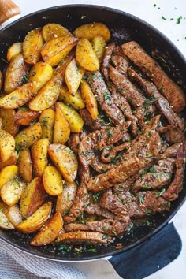
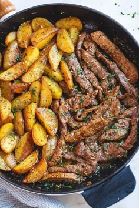

sabores globales
Descubre el sabor que transforma cada bocado en una experiencia única. Explora nuestro menú y déjate tentar por lo mejor de nuestra cocina.
Descubre el sabor que transforma cada bocado en una experiencia única. Explora nuestro menú y déjate tentar por lo mejor de nuestra cocina.
Conoce nuestras recetas más populares
Menú completo con precios y fotos
Conoce nuestra recomendacion para tu paladar hoy
Sabores Globales, Calle 123 #45-67, Barrio Central, Bogotá, Colombia
Reserve ahora una mesa para sabores globales
Desarrollar una propuesta gastronómica innovadora que combine los sabores más representativos de distintas culturas culinarias, utilizando ingredientes auténticos y técnicas tradicionales de cada región. Nuestro objetivo es ofrecer a los comensales una experiencia sensorial única, donde cada plato cuente una historia y transporte a los clientes a diferentes rincones del mundo a través del sabor, el aroma y la presentación.
Buscamos fomentar la apreciación de la diversidad culinaria global, creando un menú dinámico que equilibre tradición y creatividad, con opciones que sorprendan y deleiten a cada paladar. Además, nos comprometemos a trabajar con ingredientes frescos y de alta calidad, priorizando la sostenibilidad y la autenticidad en cada preparación, para garantizar una experiencia gastronómica memorable y culturalmente enriquecedora.

Entrada
Sopa de cebolla caramelizada con caldo de res y vino blanco, gratinada con queso gruyère y pan tostado.

Plato Principal
Guiso de carne de res cocida lentamente en vino tinto de Borgoña con champiñones, zanahorias y cebollitas perla.

Postre
Crema de vainilla horneada con una costra de azúcar caramelizada en la parte superior.

Bebida
Un cóctel elegante hecho con champán y licor de cassis (grosella negra).
Lo que le gusta a لويسا فريد de Sabores Globales:
La comida es increíble, con sabores auténticos de distintas partes del mundo. A los amantes de la gastronomía internacional les encantará la variedad de platillos y la calidad de los ingredientes. Para mí, lo mejor es el ramen japonés y el curry tailandés, ¡simplemente espectaculares!
Lo que le gusta a Berry Kuphal de Sabores Globales:
El restaurante ofrece una gran variedad de platillos de diferentes países, y la mayoría están muy bien preparados. El ambiente es agradable, el servicio es rápido y los precios son razonables. Sin embargo, esperaba un poco más de autenticidad en algunos sabores.
¡Una experiencia gastronómica increíble! Visitar Sabores Globales fue una de las mejores decisiones que he tomado. La variedad de platos internacionales es impresionante, cada uno con sabores auténticos y bien preparados...
¡Una experiencia gastronómica increíble! Visitar Sabores Globales fue una de las mejores decisiones que he tomado. La variedad de platos internacionales es impresionante, cada uno con sabores auténticos y bien preparados.
¡Una experiencia gastronómica increíble! Visitar Sabores Globales fue una de las mejores decisiones que he tomado. La variedad de platos internacionales es impresionante, cada uno con sabores auténticos y bien preparados.
 bandeja paisa
bandeja paisa lechona tolimense
lechona tolimense

 
